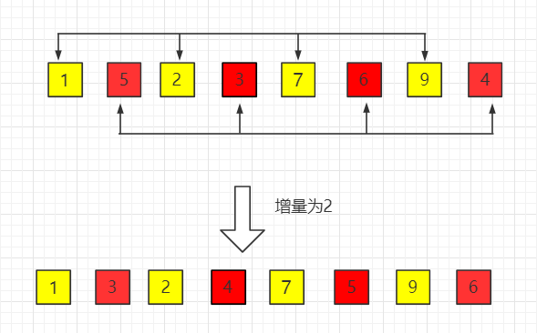
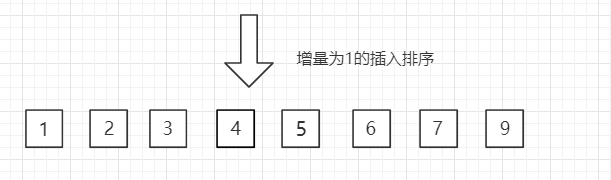

シェルソート
シェルソート（Shell Sort）は、挿入ソートの効率的な改良版であり、1959 年に Donald Shell によって提案されました。
シェルソートの核となる考え方は、元のリストを複数の部分列に分割し、各部分列に対して挿入ソートを行い、その後、部分列の間隔を徐々に縮めていき、最終的にリスト全体に対して標準的な挿入ソートを一度行うことです。この方法により、要素を大きく移動させることができ、初期段階で多くの逆順ペアを解消できるため、ソート効率が大幅に向上します。
バラバラに並んだトランプを整理することを想像してみてください。挿入ソートは、カードを1枚ずつ手に取り、手元のソート済みカードの山の正しい位置に挿入するようなものです。一方、シェルソートは、まず数枚おきにカードを抜き出して小さな山を作ってソートし、その後、抜き出す間隔を狭めてこのプロセスを繰り返すようなものです。間隔が 1 に縮まると標準的な挿入ソートになりますが、その時点で列全体はほぼ整列済みなので、最後の挿入ソートは非常に高速です。
動作原理
シェルソートの鍵となるのは、増分列という概念です。増分列は、各回で部分列を分割する間隔を決定します。アルゴリズムは、徐々に減少する増分列に従って、リストに対して複数回のソートを行います。
アルゴリズムの手順
- 増分列を選択する: 大きいものから小さいものへと並ぶ整数の列を決定します。最後の増分は必ず 1 でなければなりません。最も一般的な初期増分は配列の長さの半分で、その後、半分ずつ減らしていきます。
- 増分ごとにグループ化する: 現在の増分
gapに対して、リスト全体をgap個の部分列に分割します。各部分列は、間隔がgapであるすべての要素で構成されます。 - 部分列に対して挿入ソートを行う: 各部分列に対して個別に挿入ソートを行います。
- 増分を減らす: 新しいより小さい増分を求め、手順 2 と 3 を繰り返します。
- 最終ソート: 増分が 1 に減ったら、リスト全体に対して標準的な挿入ソートを一度行います。このときリストはほぼ整列済みなので、ソートはすぐに完了します。
適用上の説明
シェルソートの時間計算量はO(n^(1.3-2))、空間計算量は定数オーダーO(1)です。シェルソートは、時間計算量がO(n(logn))のクイックソートほど速くはありません。そのため、中規模のデータでは良好な性能を示しますが、非常に大規模なデータのソートには最適な選択とは言えません。要するに、一般的なO(n^2 )複雑度のアルゴリズムよりはるかに高速です。
過程の図解
シェルソートは、速度を上げるために挿入ソートを改良したものです。隣接しない要素を交換して配列の局所部分をソートし、最終的に挿入ソートを用いて局所的に整列した配列をソートします。
ここでは増分gap=length/2を選択し、増分をgap = gap/2の方式で縮小します。数列{n/2,(n/2)/2...1}で表します。
図の例のとおりです：
（1）初期増分・1パス目gap = length/2 = 4

（2）2パス目、増分を2に縮小

（3）3パス目、増分を1に縮小して最終的なソート結果を得る

Java サンプルコード
ソースコードパッケージのダウンロード：Download
最内側のループは、実際には挿入ソートです：
ShellSort.java ファイルのコード：
//コアコード---開始
public static void sort(Comparable[] arr) {
int j;
for (int gap = arr.length / 2; gap > 0; gap /= 2) {
for (int i = gap; i < arr.length; i++) {
Comparable tmp = arr[i];
for (j = i; j >= gap && tmp.compareTo(arr[j - gap]) < 0; j -= gap) {
arr[j] = arr[j - gap];
}
arr[j] = tmp;
}
}
}
//コアコード---終了
public static void main(String[] args) {
int N = 2000;
Integer[] arr = SortTestHelper.generateRandomArray(N, 0, 10);
ShellSort.sort(arr);
for( int i = 0 ; i < arr.length ; i ++ ){
System.out.print(arr[i]);
System.out.print(' ');
}
}
}
Python アルゴリズムの実装
Python を使用してシェルソートを実装し、最も一般的な増分設定（Shell 原始数列）を採用します：gap = n // 2、そしてgapを 2 で割る操作を繰り返し、gapが 1 になるまで行います。
例
"""
シェルソートアルゴリズムを使用して、リストをインプレースで昇順にソートします。
パラメータ:
arr (list): ソート対象のリスト。
戻り値:
list: ソート後のリスト（インプレースで変更され、同時に返されます）。
"""
n = len(arr)
# 初期増分 gap を配列の長さの半分に設定
gap = n // 2
# gap が 0 に縮小されるまでループ
while gap > 0:
# gap から始めて、各要素に対して"挿入ソート"を行う
# 注意: ここで i は gap から n-1 まで、すべての要素を走査します
for i in range(gap, n):
# arr[i] を一時変数 temp に保存する
temp = arr[i]
j = i
# 現在の gap での部分列に対して挿入ソートを行う
# 同じ部分列内で前の要素が temp より大きい場合、後ろに移動する
while j >= gap and arr[j - gap] > temp:
arr[j] = arr[j - gap]
j -= gap
# temp を正しい位置に挿入する
arr[j] = temp
# 増分を減らす。例: gap を半分にする
gap //= 2
return arr
# テストコード
if __name__ == "__main__":
# テストデータ 1: ランダムな順序
test_array = [8, 3, 5, 1, 4, 2, 7, 6]
print("ソート前:", test_array)
sorted_array = shell_sort(test_array.copy()) # copy を使用して元の配列を変更しないようにする
print("ソート後:", sorted_array)
# テストデータ 2: 重複要素を含む
test_array2 = [5, 2, 9, 5, 2, 3, 5]
print("\n"ソート前:", test_array2)
print("ソート後:", shell_sort(test_array2.copy()))
# テストデータ 3: 逆順の配列
test_array3 = [10, 9, 8, 7, 6, 5, 4, 3, 2, 1]
print("\n"ソート前:", test_array3)
print("ソート後:", shell_sort(test_array3.copy()))
コードの解説:
def shell_sort(arr):シェルソート関数を定義します。n = len(arr)配列の長さを取得します。gap = n // 2増分を初期化します。これはシェルソートで最も古典的な増分列の開始点です。while gap > 0:外側のループは、増分が徐々に 0 になるまで減るよう制御します（実際には 1 で実行が完了した後、gap //= 20 になって終了します）。for i in range(gap, n):内側のループ。インデックスgapから走査を開始します。i指しているのは、現在挿入対象の要素です。注意: このループは、すべてのgapを間隔とする部分列を同時に巧みに処理します。temp = arr[i]とj = i: 現在の要素の値を保存し、jを使って、現在の部分列内で挿入すべき位置を記録します。while j >= gap and arr[j - gap] > temp:これが挿入ソートの核心です。同じ部分列内（j - gapインデックスで前の要素にアクセス）、前の要素がtempより大きい場合、前の要素を後ろにgap個分移動します。arr[j] = temp: 保存したtemp値を正しい位置に挿入します。gap //= 2: 1ラウンドのソートが終了したら、増分を半分にし、より細かい次のラウンドのソートを行います。return arr: ソート後の配列を返します。
増分列の選択
増分列の選択は、シェルソートの性能に直接影響します。上記では Shell 原始数列（n/2, n/4, ..., 1）を使用しましたが、最適ではありません。以下に、いくつかの一般的な増分列を紹介します：
| 数列名 | 生成式 | 特徴と複雑度 |
|---|---|---|
| Shell の原始数列 | $gap = \lfloor \frac{n}{2} \rfloor, gap = \lfloor \frac{gap}{2} \rfloor...$ | 実装が簡単で、最悪時間計算量は $O(n^2)$ です。 |
| Hibbard 数列 | $1, 3, 7, 15, ..., 2^k - 1$ | 最悪時間計算量は $O(n^{3/2})$ まで改善できます。 |
| Knuth 数列 | $1, 4, 13, 40, ..., (3^k - 1) / 2$（n 未満） | 平均時間計算量は約 $O(n^{1.25})$ で、実践でよく使われます。 |
| Sedgewick 数列 | $1, 5, 19, 41, 109, ...$（$9 \times 4^k - 9 \times 2^k + 1$ と $4^k - 3 \times 2^k + 1$ を混合） | 現在知られている最良の数列の 1 つで、最悪複雑度は $O(n^{4/3})$ に達します。 |
Knuth 数列を使用した実装例
例
n = len(arr)
# Knuth 増分列を生成: 1, 4, 13, 40, 121, ...
gap = 1
while gap < n // 3:
gap = 3 * gap + 1 # 最大の初期増分を生成
while gap > 0:
for i in range(gap, n):
temp = arr[i]
j = i
while j >= gap and arr[j - gap] > temp:
arr[j] = arr[j - gap]
j -= gap
arr[j] = temp
gap //= 3 # Knuth は毎回 3 で割ることを推奨
return arr
# Knuth 数列バージョンをテスト
test_array = [33, 12, 56, 78, 2, 45, 67, 89, 1, 23]
print("Knuth数列ソート前:", test_array)
print("Knuth数列ソート後:", shell_sort_knuth(test_array.copy()))
アルゴリズムの特性と複雑度の分析
時間計算量
シェルソートの時間計算量の分析は非常に複雑です。選択する増分列に依存するためです。
- 最悪の場合: Shell 原始数列を使用した場合、最悪時間計算量は $O(n^2)$ です。
- 平均の場合： 優れた増分列（Knuth、Sedgewickなど）の場合、平均時間計算量は $O(n^{1.25})$ から $O(n^{1.5})$ の間です。
- 最良の場合： 配列がすでに整列している場合、計算量は $O(n \log n)$ に近くなります。
空間計算量
- シェルソートはインプレースソートアルゴリズムであり、定数レベルの追加スペースのみを必要とします（例：
temp,gap,i,jなどの変数）、したがって空間計算量は $O(1)$ です。
安定性
- シェルソートは不安定なソートアルゴリズムです。増分ごとにグループ化してソートする際、同じ要素が異なる部分列に分かれる可能性があり、移動によって相対的な順序が変わるためです。
他のソートアルゴリズムとの簡単な比較
| 特性 | シェルソート | 挿入ソート | マージソート | クイックソート |
|---|---|---|---|---|
| 平均時間計算量 | $O(n^{1.25})$ ~ $O(n^{1.5})$ | $O(n^2)$ | $O(n \log n)$ | $O(n \log n)$ |
| 空間計算量 | $O(1)$ | $O(1)$ | $O(n)$ | $O(\log n)$ |
| 安定性 | 不安定 | 安定 | 安定 | 不安定 |
| 長所 | 中程度のデータ量で性能が良く、インプレースソート | シンプルで、小データまたはほぼ整列済みの場合に効率的 | 安定で、時間計算量が優れている | 平均のな場合に最速 |
| 短所 | 計算量の分析が難しく、増分列の選択の影響が大きい | 大データ量では効率が低い | 追加スペースが必要 | 最悪の場合 $O(n^2)$ に退化する |